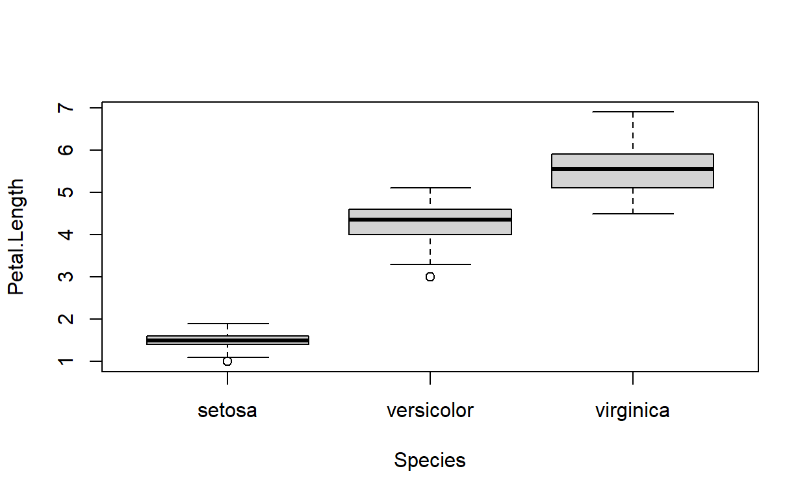

Week 8: General(ized) linear models
ANTH 674: Research Design and Analysis in Anthropology
Professor Andrew Du
Introduction
In this week’s lecture, we learned how some basic statistical tests (e.g., t-tests, ANOVAs) are simply general linear models with independent variables of different data types. General linear models (GLM) are a class of models, where a continuous dependent variable (DV) is modeled as a linear function of one or more independent variables (IV), each of which may be continuous and/or categorical. GLMs assume errors are normally distributed, wherein coefficients are estimated using ordinary least squares.
To relax the assumption of normally distributed errors, we use generalized linear models (GLiM). Using GLiMs, we learned about a new class of models, where the DV can now be non-continuous (e.g., discrete, categorical). GLiMs can have one or more IVs, which can be continuous and/or categorical, and its coefficients are estimated using maximum likelihood. In fact, GLMs are a special class of GLiMs, where the errors are normally distributed (the coefficient maximum likelihood estimates are actually the ordinary least squares estimates, even though the former was invented after the latter!).
All this led us to the following summary table, which tells us which model is associated with which data types for the DV and IV, and whether the model is a GLM or GLiM.

In this tutorial, you will learn when and how to use these different
models to analyze data. Specifically, you will see how t-tests, ANOVAs,
and ANCOVAs are GLMs you can fit using lm(). You will also
learn how to fit a logistic regression to a binomial DV and continuous
IV. And lastly, you will see how chi-squared tests are simply a special
type of GLiM, a fact that is often overlooked or not taught. By the end
of this tutorial, you should know how to fit these models to your own
data and how to interpret the outputs.
Goals for this tutorial
1) Continue the never-ending journey of familiarizing yourself with R.
2) Learn how to use t-tests, ANOVAs, and ANCOVAs in R and see how they are all just GLMs.
3) Learn how to fit a logistic regression to data in R and how to interpret the outputs.
4) Learn how to run a chi-squared test in R and see how this is just a GLiM.
General linear models
Again, this is a class of models where the DV is continuous and the IVs can be continuous or categorical, thus resulting in normally distributed errors. The coefficients are estimated using ordinary least squares.

This class of models includes t-tests, ANOVAs, and ANCOVAs, and we will cover how to use these tests in R.
t-test
We will specifically look at the two-sample t-test, where we are interested in if the mean of some continuous variable significantly differs between two groups. In GLM speak, we want to estimate the change in mean DV between groups (i.e., the slope).
To run a t-test in R, the function is t.test(). The
default t-test is Welch’s t-test, where the assumption
of equal variances between groups is relaxed (i.e., argument
var.equal is automatically set to FALSE).
Always use the default Welch’s t-test if you are conducting a t-test
using t.test(). The first argument is a vector of values
belonging to the first group, and the second argument is a vector
belonging to the second group.
Let’s see if mean mtcars$mpg is significantly different
when mtcars$am == 0 (automatic)
vs. mtcars$am == 1 (manual). Here’s what the distributions
look like.
Conduct the t-test below.
# Click "Solution" button if stuckt.test(mtcars$mpg[mtcars$am == 0], mtcars$mpg[mtcars$am == 1])As you can see from the output, mean mpg is
significantly different between the automatic and manual car models. The
outputs of interest are the P-value (which is significant), the 95% CI
of the mean difference between the two groups (which excludes zero,
hence P < 0.05), and the estimated means of the two groups (though
you could have done that on your own with mean()).
t-test using lm()
To make the t-test results comparable to the lm()
results, we have to rerun the t-test setting the argument
var.equal = TRUE (this is known as Student’s
t-test). Remember that linear regression assumes variance of
the DV is constant across all IV values (i.e., homoscedasticity), so we
have to assume variances are equal for both groups in the t-test.
Once you have rerun the t-test on the mpg data, fit a
linear model, where the DV is mpg and the IV is
am. Note that here is where factors and factors levels in R
become tangible: the IV is always a factor class and the number of
levels is two (in ANOVA it’s more). You can set your baseline factor
level using the relevel() function if you don’t like the
default.
# Click "Solution" if stuckt.test(mtcars$mpg[mtcars$am == 0], mtcars$mpg[mtcars$am == 1], var.equal = TRUE)
lm.res <- lm(mpg ~ am, data = mtcars)
summary(lm.res)
mean(mtcars$mpg[mtcars$am == 1]) - mean(mtcars$mpg[mtcars$am == 0])Use summary() to bring up more detailed information
about the linear model output. As you can see, the P-value and t-value
of the slope matches those of the t-test exactly (the sign of
the t-value might be switched depending on the order in which you input
the groups into t.test()). The standard error is the same
too (this can be brought up for the t-test using
t.test()$stderr). The lm slope estimate is
just the mean difference in mpg between groups (i.e., how
much the DV changes as you go from the first group to the second). Go
ahead and calculate the mean difference using mean() to see
this (make sure you subtract am == 0 from
am == 1, since R automatically made the former the baseline
level).
Now you can see how a t-test is a GLM where the IV is binomial (categorical with two levels)!
Mann-Whitney U test
This is the nonparametric version of the t-test, and it assesses whether the medians of two groups are significantly different. In all nonparametric tests, data are ranked first before being analyzed. This means we can relax the assumption of normally distributed data within each group, but we do so at the expense of statistical power (i.e., P-values increase in nonparametric tests compared to their parametric counterparts).
A Mann-Whitney U test is run using wilcox.test() in R.
The arguments are the same as those in t.test(). Try it out
below using the same mpg data.
# Click "Solution" if stuckwilcox.test(mtcars$mpg[mtcars$am == 0], mtcars$mpg[mtcars$am == 1])You will see the P-value has increased compared to that in the t-test.
ANOVA
An ANOVA (“analysis of variance”) is an extension of the t-test, where there are now more than two groups. We will specifically look at a one-way ANOVA, which tests the null hypothesis that the means of groups are the same (i.e., all groups sample the same statistical population). As a result, ANOVA returns one P-value, which is calculated using the F-statistic (i.e., the ratio of variance among groups to within groups). You can see from the figure below how the variance among groups increases as the groups’ means grow further and further apart.

All this is good to know, so you have some idea of how ANOVA works “under the hood”, but it is not necessary since R does all the work for you. Refer to your textbook for more information about ANOVA.
To calculate an ANOVA in R, we use the aov() function,
where the data are input in formula format, just like in
lm(). Let’s look at if mean iris$Petal.Length
significantly differs across the three species in
iris$Species.

# Click "Solution" button if stuckaov.res <- aov(Petal.Length ~ Species, data = iris)
anova(aov.res)You can see that the output is not very interesting. To get the more
familiar ANOVA table you see in publications or your textbook, you need
to wrap the anova() function around aov(). Try
this out above.
Now you get your classic ANOVA table, which makes reporting its
results in publications easy! As you can see, the P-value is extremely
small, so mean Petal.Length is significantly different
across Species (as can be visually assessed in the box plot
above).
ANOVA using lm()
Now let’s fit a linear model, where the DV is
iris$Petal.Length and the IV is iris$Species,
and compare the results to those from the ANOVA.
# Click "Solution" if stuckaov.res <- aov(Petal.Length ~ Species, data = iris)
anova(aov.res)
lm.res <- lm(Petal.Length ~ Species, data = iris)
anova(lm.res)
anova(aov.res)$P
anova(lm.res)$P
aov.res$coefficients
lm.res$coefficientsLet’s compare the F-statistic first. You can get the F-statistic from
the linear model results by wrapping anova() around your
linear model object. You can see that the F-statistics, along with all
other numbers, are identical!
Now let’s compare P-values. To get the exact P-value from the ANOVA,
use anova(aov())$P. You can do the same for the linear
model results by replacing aov() with lm().
The P-values are the same!
Lastly, to really drive the point home, enter
aov.res$coefficients (assuming you saved your ANOVA results
to an object named aov.res). It returns coefficient
estimates that are identical to those of your linear model!
So, an ANOVA is just a GLM, where the IV is multinomial. I find the
output using lm() much more useful, as it returns mean
differences between groups (i.e., effect sizes). For example, the
intercept is simply the mean of the baseline group, which in this case
is setosa. Calculate mean Petal.Length for
setosa and compare it to the intercept. The coefficient
estimate for Speciesversicolor is the mean difference in
Petal.Length between setosa and
versicolor. Again, confirm this by calculating the mean
difference using mean(). And lastly, the coefficient
estimate for Speciesvirginica is the mean difference in
Petal.Length between setosa and
virginica. Again, confirm this using
mean().
# Click "Solution" if stucklm.res <- lm(Petal.Length ~ Species, data = iris)
(setosa.pl.mean <- mean(iris$Petal.Length[iris$Species == "setosa"]))
lm.res$coefficients["(Intercept)"]
mean(iris$Petal.Length[iris$Species == "versicolor"]) - setosa.pl.mean
lm.res$coefficients["Speciesversicolor"]
mean(iris$Petal.Length[iris$Species == "virginica"]) - setosa.pl.mean
lm.res$coefficients["Speciesvirginica"]Kruskal-Wallis test
This is the nonparametric version of an ANOVA and is computed using
kruskal.test(). It tests if the medians are
significantly different among groups. The argument is exactly the same
as in aov() (i.e., you can use the formula format). Try
conducting a Kruskal-Wallis test on
iris$Petal.Length ~ iris$Species.
# Click "Solution" if stuckkruskal.test(iris$Petal.Length ~ iris$Species)
kruskal.test(iris$Petal.Length ~ iris$Species)$p.value
anova(aov(iris$Petal.Length ~ iris$Species))Append $p.value to the end of the function to get the
exact P-value. You’ll see that it’s still significant, but it has
increased compared to that from the ANOVA.
ANCOVA
An ANCOVA (“analysis of covariance”) is a GLM where a continuous DV is modeled as a function of a categorical IV and a continuous IV (i.e., it is a multiple regression model). It is often taught as combining regression and ANOVA. An ANCOVA is specifically used to see if the intercept and/or slope of a regression differ across factor levels. Let’s see how this works by running ANCOVAs in R.

ANCOVA: differing intercept
In this kind of ANCOVA model, there is NO interaction
between the IVs. So, lets fit a multiple regression model, using
lm(), where mtcars$qsec is modeled as a
function of mtcars$am and mtcars$hp.
# Click "Solution" button if stuckancova.res <- lm(qsec ~ am + hp, data = mtcars)
summary(ancova.res)
plot(mtcars$qsec ~ mtcars$hp, type = "n") # setting type = "n" suppresses plotting, so I can add on points later
points(mtcars$qsec[mtcars$am == 0] ~ mtcars$hp[mtcars$am == 0], pch = 16, col = "red")
points(mtcars$qsec[mtcars$am == 1] ~ mtcars$hp[mtcars$am == 1], pch = 16, col = "blue")
legend("topright", c("Automatic (0)", "Manual (1)"), pch = c(16, 16), col = c("red", "blue"))
abline(ancova.res$coefficients["(Intercept)"], ancova.res$coefficients["hp"], col = "red") # first argument is intercept, second argument is slope
abline(ancova.res$coefficients["(Intercept)"] + ancova.res$coefficients["am"], ancova.res$coefficients["hp"], col = "blue")You can see that there are three estimated coefficients, all of which
are significant. The intercept is the intercept of the regression of
qsec ~ hp when am == 0 (i.e., the baseline
level). To illustrate this point, first plot qsec ~ hp,
with the points color-coded by am. Now use
abline() to fit a line with the aforementioned intercept
and a slope that is the hp coefficient (i.e., our
continuous IV). Thus far, you have used abline() with an
lm() object, but you can also fit a line with
abline(), where the first argument is the intercept and the
second argument is the slope.
As you can see, the line fits really nicely!
The second estimated ANCOVA coefficient (am, our
categorical IV) is the amount that the intercept changes by as you go
from baseline am == 0 to am == 1. Fit a line
to those points where am == 1 by specifying the intercept
to be the ANCOVA intercept plus the estimated am
coefficient, and the slope is the same hp coefficient.
Again, the line fits nicely, illustrating that the ANCOVA model fits the data well (you can also infer this from the significant coefficients and the fairly large multiple \(R^2\)). You can also see from the plot how the lines are parallel (i.e., same slope but different intercept, which is what our ANCOVA is modeling).
So, the ANCOVA tells us that the manual (am == 1)
intercept is smaller than the automatic (am == 0) by -1.53,
and this difference is statistically significant. Useful
information!
ANCOVA: differing intercept and slope
For this ANCOVA model, there IS an interaction between the
IVs. The interaction term is what changes the slope as you go from the
baseline level to the other level, and the estimated coefficient for the
categorical IV is what changes the intercept as you change levels. You
can fit an ANCOVA where only the slope changes (e.g.,
lm(DV ~ IV1:IV2)), but this is almost never done.
So, lets fit an interaction multiple regression model, where the DV
is mtcars$mpg and the IVs are mtcars$am and
mtcars$wt (i.e., lm(mpg ~ am * wt)).
# Click "Solution" button if stuckancova.res <- lm(mpg ~ am * wt, data = mtcars)
plot(mtcars$mpg ~ mtcars$wt, type = "n")
points(mtcars$mpg[mtcars$am == 0] ~ mtcars$wt[mtcars$am == 0], pch = 16, col = "red")
points(mtcars$mpg[mtcars$am == 1] ~ mtcars$wt[mtcars$am == 1], pch = 16, col = "blue")
legend("topright", c("Automatic (0)", "Manual (1)"), pch = c(16, 16), col = c("red", "blue"))
abline(ancova.res$coefficients["(Intercept)"], ancova.res$coefficients["wt"], col = "red")
abline(ancova.res$coefficients["(Intercept)"] + ancova.res$coefficients["am"], ancova.res$coefficients["wt"] + ancova.res$coefficients["am:wt"], col = "blue")As you can see, there are now four estimated coefficients, one more
than before (we’d need to be careful here if this was “real” research,
since we have 32 data points only, so we’re likely overfitting our data
somewhat). As before, the intercept is the intercept of the
mpg ~ wt regression when am == 0 (the baseline
level, which is “Automatic”). The estimated wt coefficient
(i.e., the continuous IV) is the corresponding slope for
am == 0. Use abline() to add this line to the
plot.
It’s a nice fit!
To fit the line for points corresponding to am == 1, we
have to understand what the other coefficients are doing. As before, the
am coefficient (i.e., the categorical IV) is how much the
intercept changes as you go from the baseline am == 0 to
am == 1. The interaction term, am:wt, is how
much the slope changes as you go from am == 0 to
am == 1. With this knowledge, add the line for points where
am == 1.
Again, it’s a good fit. And you can see that the lines are not parallel, indicating different slopes, and that the intercepts are different.
The am and am:wt coefficients are
significant, telling us that the intercepts and slopes, respectively,
are significantly different between am == 0 and
am == 1. And the coefficients tell us by how much the
intercepts and slopes are changing (14.88 and -5.30, respectively). So
in sum, ANCOVA is a really useful statistical model!
Exercise 1
Let’s use Student’s
sleepdataset (Student is the one who invented the t-test!). Enter?sleepfor more information on the dataset. Use a t-test to see if meanextradiffers between the two groups ingroup.Fit an ANOVA to see if mean
mtcars$mpgdiffers across number of gears inmtcars$gear.Fit an ANCOVA to
iris$Petal.Widthas a function ofiris$Sepal.Widthandiris$Specieswith an interaction between the two variables. Let’s use significant coefficients as a way to determine which effects are worth interpreting. What do the ANCOVA results tell us about how the intercept and slope ofPetal.Width ~ Sepal.Widthchanges acrossSpecies?
# Click "Solution" button when done# Q1
t.test(sleep$extra[sleep$group == 1], sleep$extra[sleep$group == 2])
lm(extra ~ group, data = sleep)
# Q2
anova(aov(mpg ~ gear, data = mtcars))
anova(lm(mpg ~ gear, data = mtcars))
# Q3
ancova.res <- lm(Petal.Width ~ Sepal.Width * Species, data = iris)
summary(ancova.res)
# intercept increases by 0.63988 as you go from setosa to virginica.
# we don't have a large enough sample size to determine precisely how the intercept changes from setosa to versicolor (i.e., P > 0.05)
# slope increases as you go from setosa to versicolor (by 0.35374) and setosa to virginica (by 0.39324).Generalized linear models
This class of models relaxes the assumption of normally distributed errors, so we can look at DVs that are not continuous (e.g., categorical). In contrast to GLMs, the coefficients are estimated using maximum likelihood.

We will begin with the most popular GLiM, which is logistic regression.
Logistic regression
A logistic regression models a binomial DV as a linear function of one or more IVs, each of which can be continuous and/or categorical. It is used to estimate the probability (specifically, the odds) of belonging to the non-baseline level as a function of the IVs. Thus, this probability is the DV being modeled by the logistic regression.
Let’s first see why a simple linear regression is a poor
methodological choice when the DV is binomial. Plot
mtcars$am as a function of mtcars$wt. Then,
fit a linear model to the data, and plot the line.
# Click "Solution" if stuckplot(am ~ wt, data = mtcars)
lm.res <- lm(am ~ wt, data = mtcars)
abline(lm.res)
hist(lm.res$residuals)As you can see, the fit is poor, as the relationship is not linear.
Furthermore, the linear model predicts probabilities that are greater
than one when wt < 1 and less than zero when
wt > 4.5. This is a big problem, as probabilities can
only be between zero and one.
Now plot a histogram of the linear model residuals. You can see that the residuals are bimodal, reflecting the binomial nature of the DV, and thus one of the assumptions of linear regression (i.e., normally distributed errors) is violated.
The data are better fit by a logistic function:
What logistic regression does is it uses a logit transformation to convert the logistic function into a straight line, so probabilities can be modeled using a standard linear model. The logit transformation is defined as:
\[\begin{align} \textrm{log}(\frac{p}{1-p}), \end{align}\]
where \(p\) is the modeled DV probability of belonging to the non-baseline category. The logistic regression model equation is then:
\[\begin{align} \textrm{log}(\frac{p}{1-p}) = \beta_0 + \beta_1 X_1 + \epsilon. \end{align}\]
Fitting a logistic regression to data
Let’s fit a logistic regression model to am ~ wt. This
is done using glm(), which fits GLiMs to data (I know, kind
of confusing because I use GLM to indicate general linear models, but
GLM is also used as an abbreviation for GLiM…ugh). The proper line of
code is glm(am ~ wt, data = mtcars, family = binomial). The
family = binomial argument indicates that the errors are
binomially distributed (which makes sense given our DV is binomial), and
the proper logit transformation is automatically applied.
# Click "Solution" button if stuckglm.binom <- glm(am ~ wt, data = mtcars, family = binomial)
summary(glm.binom)
confint(glm.binom)
plot(am ~ wt, data = mtcars)
x <- seq(1, 6, length.out = 100)
lines(x, predict(glm.binom, data.frame(wt = x), type = "response"))Use summary() to bring up the detailed output. As you
can see, a lot of things are the same as your standard lm()
output, but some things are different because the logistic regression
coefficients were estimated using maximum likelihood. Nevertheless, you
still get estimated coefficients, their standard errors, their P-values,
and you can use confint() on the glm() object
to get the 95% CI of the coefficient estimates.
To add the fitted logistic curve to your plot, we have to use the
predict() function to get out predicted values. Calling the
glm() object glm.binom, enter
predict(glm.binom, data.frame(wt = seq(1, 6, length.out = 100)), type = "response)
(the seq(1, 6, length.out = 100) simply creates a vector of
many values within the range of the IV, so a smooth curve can be
plotted; type = "response" ensures that the predicted DV
output is on the scale of the DV, i.e., response variable).
Interpreting coefficients
The estimated intercept and slope are significant and are 12.04 and
-4.02, respectively. The intercept is the DV value when the IV is set to
zero. So setting wt to zero, we get \(\textrm{log}(\frac{p}{1-p}) = 12.04\) (see
equation above). We can exponentiate both sides of the equation to get
\(\frac{p}{1-p} = 169,396.9\).
Recalling that \(\frac{p}{1-p}\) is the
odds, 169,396.9 is the odds that a car will be manual transmission
(am == 1, i.e., the non-baseline level) when
wt = 0. This number is enormous because all car weights are
far above zero (to get a more interpretable intercept estimate, we
should center wt first).
The slope is how much the log odds change as wt
increases by 1. Exponentiating the slope returns the proportional change
in odds that a car will be manual (am == 1) when
wt increases by one. exp(-4.02) returns 0.02, so the odds
will decrease by 98%, a large amount! This result illustrates that
wt has a very large effect on am.
Chi-squared test
A chi-squared test models one categorical DV as a function of one categorical IV. It tests the null hypothesis that the two variables are independent of each other (e.g., certain hair colors are not associated with certain eye colors). Statistically speaking, the order of the variables does not matter, as either order will give the same results. However, knowing which variable is the DV vs. the IV is important for interpreting your results.
Because we’re dealing with categorical variables only, the numbers we are dealing with are frequencies or counts. These are presented as a contingency table or crosstab, where the columns are the IV and the rows are the DV.
We will be working with the built-in HairEyeColor
dataset, which records the hair and eye color and sex of 592 statistics
students. We will be looking at two variables only, so we will subset
out hair and eye color for males only. Do this using
HairEyeColor[, , "Male"], and save the results to an
object.
# Click "Solution" if stuckx <- HairEyeColor[, , "Male"]
install.packages("vcd", dep = T)
library(vcd)
mosaic(x)This is what your contingency table should look like:
| Brown | Blue | Hazel | Green | |
|---|---|---|---|---|
| Black | 32 | 11 | 10 | 3 |
| Brown | 53 | 50 | 25 | 15 |
| Red | 10 | 10 | 7 | 7 |
| Blond | 3 | 30 | 5 | 8 |
The columns are eye color and the rows are hair color (so we are implicitly saying that eye color is the IV and hair color is the DV, though we are analyzing this dataset for illustrative purposes only).
You can create a mosaic plot of your contingency table by entering
mosaic(x), where x is your contingency table
(you will need to install and load the vcd package
first).
Conducting the test
To conduct a chi-squared analysis in R, we use the
chisq.test() function, where the only inputted argument is
our contingency table. Try this out below.
# Click "Solution" if stuckx <- HairEyeColor[, , "Male"]
chi.res <- chisq.test(x)
sum(((x - chi.res$expected) ^ 2)/chi.res$expected)
mosaic(x, shade = TRUE, legend = TRUE)You can see that we get a calculated \(\chi^2\) test statistic and a P-value. Recall that the \(\chi^2\) statistic is calculated as:
\[\begin{align} \chi^2 = \sum_{\textrm{all cells}} \frac{(\textrm{Observed} - \textrm{Expected}) ^ 2}{\textrm{Expected}}. \end{align}\]
So we carry out this calculation for each cell and then sum the
results across all cells. Calling the chi-squared results
chi.res, we can get out the expected frequencies with
chi.res$expected. Thus, we can calculate the \(\chi^2\) statistic ourselves with
sum(((x - chi.res$expected) ^ 2)/chi.res$expected).
The significant P-value tells us that certain hair colors are
associated with certain eye colors (i.e., some combinations are more
common than random, while some are rarer). We can visualize which
hair/eye color combinations are driving the results with a mosaic plot.
This time, enter mosaic(x, shade = TRUE, legend = TRUE).
You can see that individuals with brown eyes are more likely to have
black hair (large positive residuals) and less likely to have blond hair
(large negative residuals). And individuals with blue eyes are less
likely to have black hair and more likely to have blond hair. If you
want to get out the residuals so you can see the actual numbers, enter
chi.res$residuals.
Chi-squared tests as log-linear models
Log-linear models are a class of GLiMs, where the DV is frequencies, so you can see how this applies to contingency table analyses and chi-squared tests. (In fact, the figure in the topic, Generalized linear models, is a log-linear model. You can see how the error distributions are not normal when the DV is close to zero because frequencies cannot be negative). Specifically, we want to model the frequencies as a function of the categorical DV and IV with an interaction between the two (as in a two-way ANOVA). The interaction term is what is tested in a chi-squared test. This makes sense as we’re interested in whether the relationship between frequencies and hair color changes as a function of eye color (and whether the relationship between frequencies and eye color changes as a function of hair color).
I have reformatted the dataset so that frequencies are in the first column and the other two columns denote the hair and eye color each frequency is associated with. I have included the code for this in the console below. Run the code to see what the dataset looks like.
x <- HairEyeColor[, , "Male"]
x1 <- data.frame(Freq = c(x), hair_color = rep(rownames(x), times = nrow(x)), eye_color = rep(colnames(x), each = ncol(x)))glm.pois <- glm(Freq ~ hair_color * eye_color, data = x1, family = poisson)
anova(glm.pois, test = "Rao")
chisq.test(x)To run a log-linear GLiM, we use the glm() function with
family = poisson, so the proper code here is
glm(Freq ~ hair_color * eye_color, data = x1, family = poisson).
Enter this code and save the results to an object. You’ll see that a lot
of coefficients have been estimated!
Now enter anova(glm.pois, test = "Rao") (I called my
glm() object glm.pois;
test = "Rao" tells R to calculate the P-value using the Rao
score test). Look at the statistics for the interaction term. You can
see that the \(\chi^2\) statistic
(under the column Rao) and the P-value are exactly the same
as when using chisq.test()!
This once again illustrates that chi-squared tests, usually taught as a test separate from linear models, is in fact a linear model, specifically a GLiM that has a DV of frequencies.
Exercise 2
Let’s create a logistic regression model, where
iris$Speciesis the DV andiris$Petal.Lengthis the IV. First delete thesetosaspecies, so we’re left with only two species inSpecies. Drop the unusedsetosalevel inSpeciesjust in case, usingdroplevels(). Then, fit the logistic regression model.Let’s run a chi-squared test on hair and eye color again but this time just on the females (you’ll need to first subset out the female data in
HairEyeColor). Then create a mosaic plot to see which hair/eye color combinations are driving the results.
# Click the "Solution" button when done# Q1
iris1 <- iris[iris$Species != "setosa", ]
iris1$Species <- droplevels(iris1$Species)
glm.binom <- glm(Species ~ Petal.Length, data = iris1, family = binomial)
# Q2
fem <- HairEyeColor[, , "Female"]
chisq.test(fem)
mosaic(fem, shade = TRUE, legend = TRUE)Conclusion
This week’s lecture and tutorial really started with the simple linear regression lecture. That was our first foray into GLMs, which taught us the fundamentals (e.g., what a DV and IV are, how to interpret coefficients, what the assumptions are). We built upon that week with multiple regression, which extended simple linear regression to two or more IVs. Those two weeks culminated in this week’s material where we still learned about GLMs, but this time we varied the data type of the IVs. We saw how this resulted in tests that many of us are familiar with (e.g., t-tests, ANOVAs). So instead of thinking about t-tests, ANOVAs, and ANCOVAs as separate tests (which is how they’re commonly taught), think of them as different versions of GLMs (this is how I think). I find this approach much more intellectually satisfying, and there are less things you have to learn and memorize (e.g., instead of learning different sets of assumptions, we now know that they all have the same assumptions because they’re all GLMs!).
We then moved onto GLiMs, where the assumption of normally distributed errors is relaxed. This allowed us to explore even more linear models, this time with DVs that are not continuous. By far, the most popular GLiM is logistic regression where the DV is binomial (and thus the errors are binomially distributed). Another common GLiM is the log-linear model, or Poisson regression, where the DV is frequencies. We saw that a log-linear model with frequencies as a function of two categorical variables with an interaction between them is just a chi-squared test.
In sum, all of the popular, fundamental statistical tests are linear models (GLMs or GLiMs). Thus, if you understand linear models, you understand all these tests! Between the lecture and this tutorial, you should now have the knowledge and skillset to apply these methods to your own datasets.